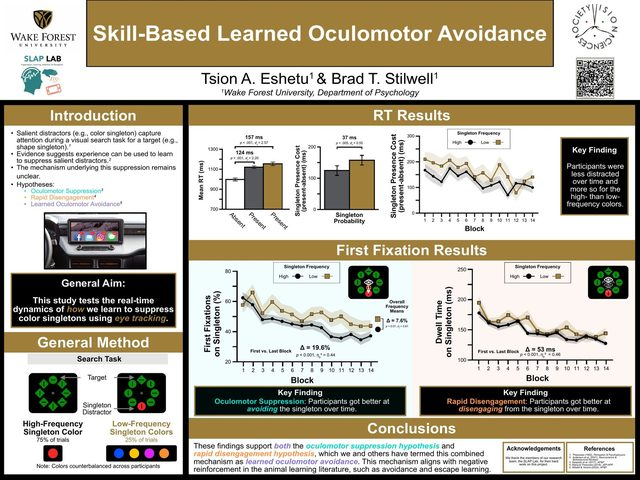
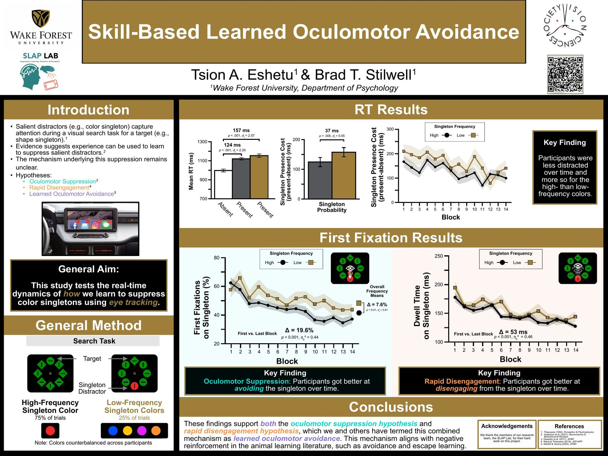

Skill-based learned oculomotor avoidance
Bright distractors grab our attention, but experience can teach us to suppress them. Using eye tracking, we tested whether people learn to avoid looking at a distractor, to look away faster once they land on it, or both. They did both, and it looks like a learned skill.
Read the full summary
Where did your eyes go first? Find the diamond. Chances are your eyes were pulled toward the red circle before you found it, even though it is not what you were looking for. That pull is what I study.
The question
Salient distractors, like a bright warning light on a dashboard, pull attention away from what we are doing. Experience can teach people to suppress them. But what changes with experience? Do people learn to avoid looking at the distractor in the first place, learn to look away faster once they land on it, or both?
What we did
Participants searched for a target shape while a task-irrelevant, brightly colored distractor appeared. One distractor color showed up much more often than the others. we recorded their eye movements with an EyeLink 1000 Plus eye tracker, which let us separate where the eyes land first from how long they stay there.
What we found
- Distractors slowed people down less when they were the frequent color. The slowdown was 124 ms for the frequent color and 157 ms for the rare colors.
- People got better at avoiding the distractor. Over the session, their first look landed on the distractor less often (a 19.6% decrease from the first block to the last), and less often still for the frequent color.
- People got faster at letting go. When they did look at the distractor, they spent 53 ms less time on it by the end of the session.
Why it matters
The improvement showed up for every distractor color, not only the frequent one. That is more consistent with people building a general skill, made of both avoidance and faster disengagement, than with simply tracking how often each color appears. we call this pattern learned oculomotor avoidance (oculomotor means relating to eye movements).

Text description of the poster
Introduction
Salient distractors, such as a color singleton, capture attention during visual search for a target, such as a shape singleton. Experience can be used to learn to suppress salient distractors, but the mechanism is unclear. Three hypotheses are tested: oculomotor suppression, rapid disengagement, and learned oculomotor avoidance. The general aim is to test the real-time dynamics of how we learn to suppress color singletons, using eye tracking.
General method
In the search task, the target is a uniquely shaped item among green items, and a color singleton distractor appears on some trials. One high-frequency singleton color appeared on 75% of trials, and four low-frequency singleton colors shared the other 25%. Colors were counterbalanced across participants.
Reaction time results
Mean reaction time was fastest when the singleton was absent. Compared with singleton-absent trials, the singleton slowed responses by 124 ms for the high-frequency color and by 157 ms for the low-frequency colors. The 37 ms difference between the two was reliable (p = .005). The singleton cost shrank across the 14 blocks of the experiment and was smaller for the high-frequency color. Key finding: participants were less distracted over time, and more so for high-frequency than low-frequency colors.
First fixation results
The percentage of first fixations landing on the singleton fell across blocks, with a decrease of 19.6% from the first block to the last (p < .001), and it was lower overall for the high-frequency color (a 7.6% difference, p < .01). Key finding, oculomotor suppression: participants got better at avoiding the singleton over time. Dwell time on the singleton also fell across blocks, by 53 ms from the first block to the last (p < .001). Key finding, rapid disengagement: participants got better at disengaging from the singleton over time.
Conclusions
The findings support both the oculomotor suppression hypothesis and the rapid disengagement hypothesis. Together, this combined mechanism is termed learned oculomotor avoidance. It aligns with negative reinforcement in the animal learning literature, such as avoidance learning and escape learning.